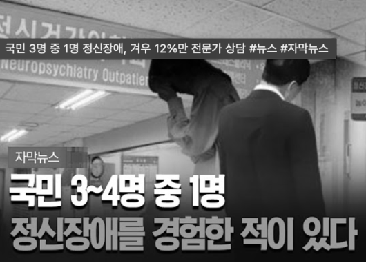
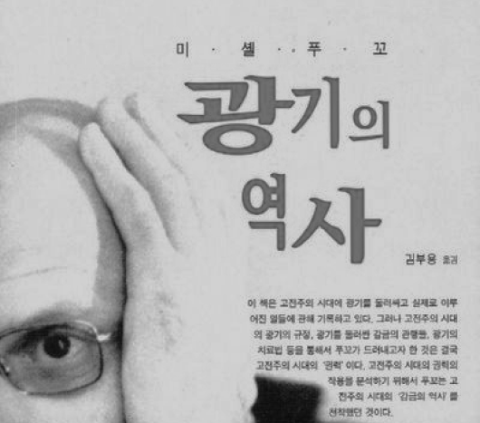
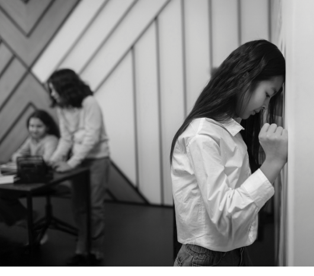
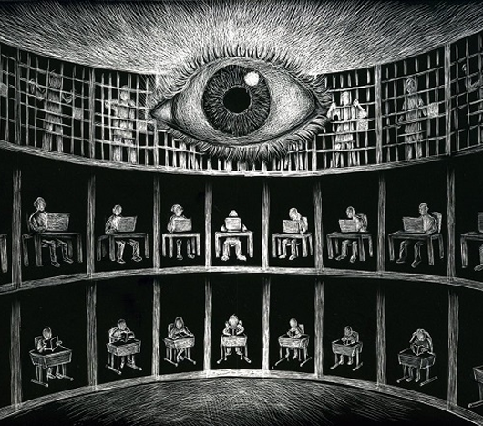

"정병 걸렸네."
다들 한 번씩은 들어본 적 있죠?
"정병 걸렸네."라는 말이 일상 언어가 될 만큼,
정신 건강은 더 이상 특별한 문제가 아닙니다.
통계에 따르면 현대인의 약 3분의 1이 정신 건강 문제를 경험하고 있습니다.
[자막뉴스] 국민 3~4명 중 1명 정신장애 경험 / OBS 뉴스
SNS와 미디어 곳곳에서 정신 건강 이야기를 접하며, 우리는 "혹시 나도..?"라고 자문하게 됩니다.
그런데,
언제부터 '정신병'이었을까?
미셸 푸코(Michel Foucault)
“ 광기는 이성의 부재가 아니라 ”
이성이 만들어낸 타자이다.
푸코는 『광기의 역사』를 통해 정신병의 개념이 역사적으로 구성되었음을 밝혔습니다.
푸코에 따르면,
근대 사회는 '정상'이라는 기준을 만들고
그에 부합하지 않는 '비정상'을 체계적으로 배제했습니다.
배제된 이들은 교정과 치료의 대상이 되었고,
정신병원이라는 제도 안에 감금되었습니다.
푸코는 '정상'과 '비정상', '이성'과 '광기'의 경계가 권력과 지식에 의해 만들어진 사회적 구성물임을 주장했습니다.
즉, 정신병은 발견된 것이 아니라 '발명'된 것이라는 도발적인 시각을 제시했습니다.
그렇다면 진짜 정상인은 존재하는가?
우리는 '정상인'이라는 개념을 당연하게 받아들이지만, 푸코는 이 범주 자체에 의문을 제기합니다.
실제로 우리 모두는 일상에서

간의 경계를 끊임없이 넘나듭니다.
푸코는 "중요한 것은 경계 그 자체가 아니라,
경계를 넘나들 수 있는
유연성이 있는가”라고 말합니다.
몸이 지칠 때는 번아웃이 오고,
슬픈 일이 있을 때 우울증이 생기는 것은
너무나 당연한 ‘정상적인' 반응이란 것입니다.
그런데 우리는 왜 스스로
‘환자'라고 생각할까요?
번아웃, 우울증, 불안장애 같은 진단명이
일상 언어가 된 현실은 자연스러운 현상일까요?
일상화된 진단명들,
그리고 보이지 않는 폭력
푸코의 관점에서 보면, 이는 우리가 인지하지 못한 채 내면화한
'정상성의 폭력'일 수 있습니다.
우리는 스스로를 끊임없이 진단하고 분류하며, 의료적 시선으로 자신을 감시합니다.
푸코는 이러한 자기 감시와 규율이 현대 권력의 작동 방식이라고 분석했습니다.
푸코의 판옵티콘 - 가시성의 함정(외부 감시가 없어도 스스로를 감시)
푸코의 사상은 정신병을 개인의 문제가 아닌 사회 구조의 문제로 바라보게 합니다.
현대인의 정신병에 대한 당신의 생각은 어떠한가요?